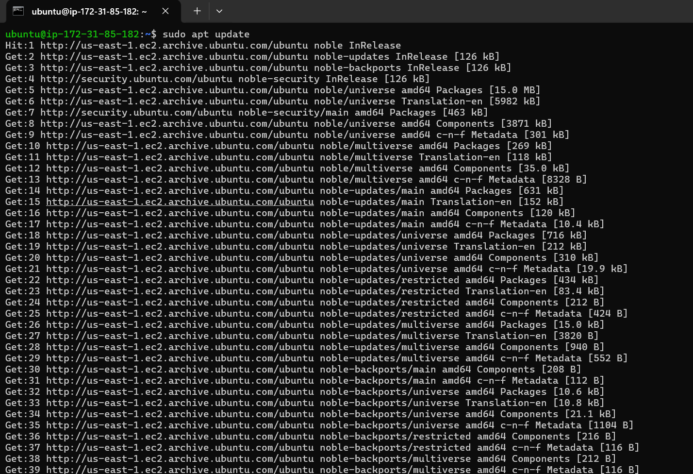

Hello…………
In this page I’m going to tell how you can host a static web page on a ubuntu server
- I hosted a Static Web Page on Ubuntu Server which is in Cloud (AWS). In order to do this you must have an AWS Account and access to the AWS resources. I already have one. The CPU hardware I'm using is of type t2. micro with 1 vCPUs has 1GiB of memory which is Intel Xeon Processor attached the image below(Not the actual image). You can download the static website html files and images from my github (My Static Website)
- I have configured and deployed the instance in the US-EAST-1 Virginia Region. There is another way of hosting a static page which is AWS S3 Static Website by storing your HTML, CSS and static files in S3
- Select the VPC , subnet, AMI, Instance type, Storage, Security Group, Key Pair, User data, etc.. and select launch instance
- Connect to the ubuntu server using the following command on your local machine (windows or mac) in the terminal:
- A SSH key-pair is needed to login into the ubuntu server
ssh -i "my key pair.pem" ubuntu@3.84.50.59
- Update the server and install the Nginx
sudo apt update

- sudo apt install nginx -y
- Start the nginx server and check the status by typing the below commands:
sudo systemctl start nginx
sudo systemctl status nginx
- I’m using the default nginx site configuration file which has information about website root folder and referring to index.html page (File location: /etc/nginx/sites-available/default)
- As I said i’m using the nginx default content which serves from /var/www/html directory and images directory is created to serve images for my index.html page
- Go the Security groups associated with the instance and modify the inbound rule to access the server at port 80 from anywhere in which my static website is running
- Copy the images and html files to the /var/www/html directory. To save the changes reload the nginx server. Here I have WinSCP to transfer files from my local system to ubuntu server. Copy the files from ubuntu home dir to /var/www/html directory. Remove index.debian html file.
sudo systemctl reload nginx
- Copy the Public IP of this server and go to the browser and paste the ip address there you go. You did it 🙂